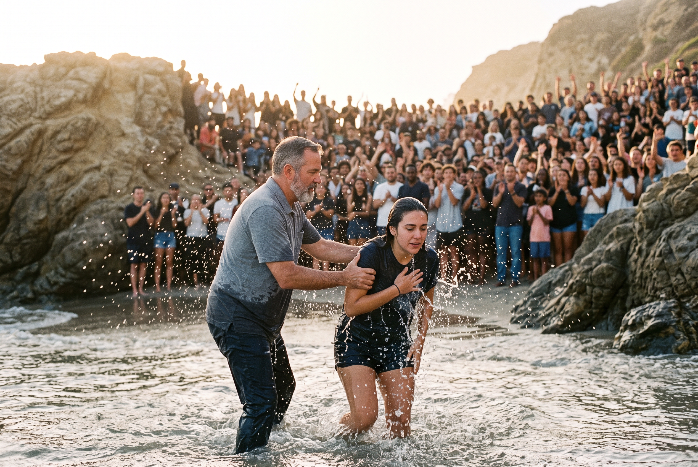

You went into the water. Tell someone what He did. Thirty seconds, your words, so one baptism invites the next.
Part of the Baptize The World movement. Find a baptism near you or bring one to your church.
Visit baptize.orgStep 1 · Before you start
Anyone under 18 needs a parent or guardian to say yes before recording or sharing.
Step 2 · Add yours
Answer the age question above to unlock this step.
In the water
What we're looking for
No script and no camera crew. Just you telling what happened.
Before, the water, after. Ten seconds each is enough.
Name someone you'd love to see in the water next.
We only share what you say yes to. Under 18 needs a parent.
Stories
Thirty seconds, in their own words. Hover or tap the reel to pause.
Add yoursSample stories for the demo. Real stories appear only with the person's consent.
Record it, post it, link it
Record your story in the app you already use, then come back and paste the link in Add yours so it shows up here.
Follow Baptize The World on Instagram , Facebook and YouTube.
Watch
